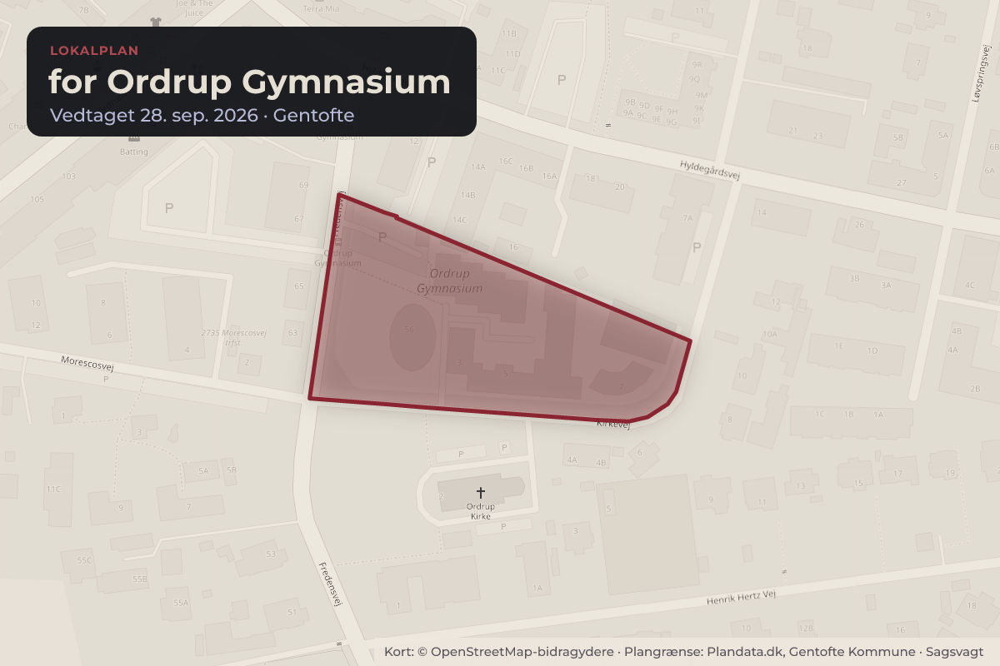
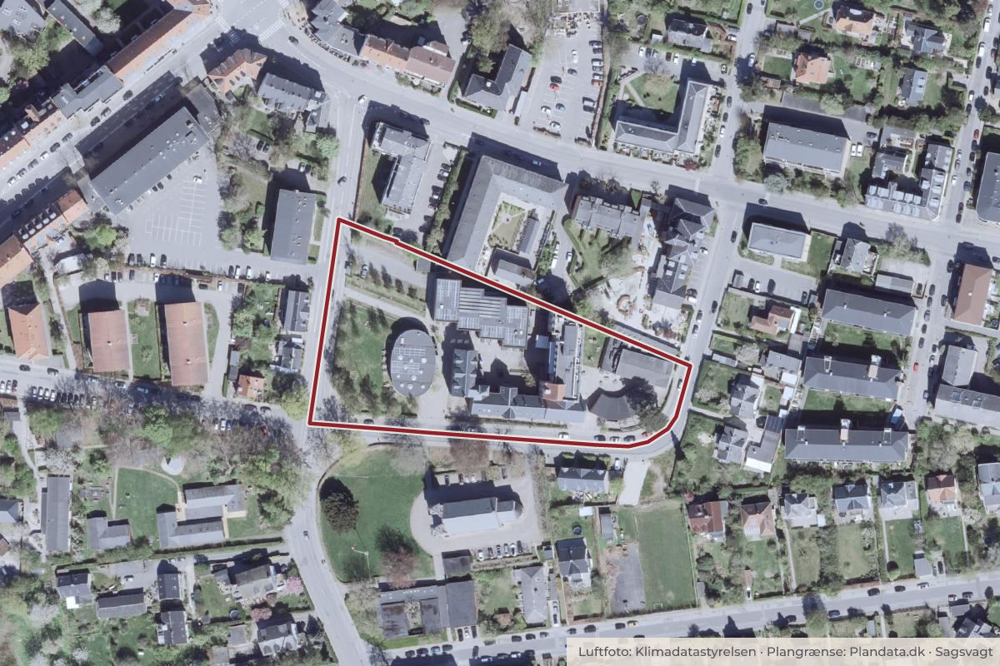

Besluttet 21. september, Økonomiudvalget, Gentofte
Lokalplan 454 for Ordrup Gymnasium. Endelig vedtagelse

Kort: © OpenStreetMap-bidragydere. Plangrænse: Plandata.dk, Gentofte Kommune.

Kort fortalt
- Hvem
- Økonomiudvalget, Gentofte Kommune
- Hvornår
- Mandag 21. september 2026
- Status
- Besluttet. Anbefales til Kommunalbestyrelsen. Patrizia Christensen (I) undlod at stemme.
Er noget forkert her? Skriv til os
Læs hele sagen Kommunens egen tekst
Baggrund
Ordrup Gymnasium har som bygherre ansøgt om ombygning og udvidelse af den
bevaringsværdige tidligere gymnastikbygning. Bygningen er beliggende på Kirkevej 7. Ordrup
Gymnasium ønsker at fremtidssikre deres undervisningsrum i bygningen med tidssvarende
faciliteter.
Forslag til Lokalplan 454 og forslag til Tillæg 7 til Kommuneplan 2025 blev enstemmigt vedtaget
sendt i offentlig høring af Kommunalbestyrelsen den 27. april 2026, pkt. 2. Planforslaget
muliggør en ekstra etage på gymnastikbygningen, opførelse af to nye etager på den del af
bygningen, der ligger mod vest og i dag kun fremstår i én etage, samt udvidelse af bygningens
fodaftryk mod vest med 2,3 m mod den eksisterende høje skolebygning i baggården.
Offentlig høring
Planforslagene har været fremlagt i offentlig høring fra den 30. april til den 25. juni 2026. Der er
modtaget 25 høringssvar, primært fra de nærmeste naboer på Kirkevej. I høringssvarene er der
generel forståelse for ønsket om modernisering af Ordrup Gymnasiums undervisningsfaciliteter.
Dog udtrykkes et ønske om at begrænse de mest indgribende konsekvenser for Kirkevej og de
nærmeste naboer.
Høringssvarene omhandler følgende temaer:
Bygningshøjde samt forholdet til Lokalplan 348
Gener for naboer i form af skygge, reduceret oplevelse af himmelrum og indkigsgener
Vurdering af tidligere fremsatte alternative forslag
Den tidligere gymnastikbygning og håndboldspillets oprindelse
De 14 enslydende høringssvar samt støtteerklæringer indeholder to kompromisforslag med
ønske om justering af de mest indgribende bestemmelser, herunder en reduceret
bygningshøjde samt ingen vinduer eller døre i østgavlen.
Der blev holdt borgermøde om planforslagene den 16. juni 2026. Der blev her fremsat
bemærkninger om bl.a. gymnastikbygningens fremtidige anvendelse, støjgener, trafik og
parkering – også uden for almindelig undervisningstid, vinduer i østgavlen, bygningens højde,
nabohensyn samt visuelle gener.
Forvaltningens gennemgang af lokalplanen har givet anledning til at foreslå ændringer
vedrørende følgende emner:
Justering af bestemmelser om udendørs opholdsarealer
Støjkrav for udendørs opholdsarealer
Mansardtag – taghældning på tagets øverste del
Lokalplan 423 for hegning (Temalokalplan)
Foreslåede ændringer
Høringssvarene og forvaltningens gennemgang af planforslaget har givet anledning til følgende
vurderinger og ændringsforslag:
Bygningshøjde og Lokalplan 348. Forvaltningen anbefaler, at lokalplanforslagets
bestemmelser om bebyggelsens højde fastholdes uændret.
Skyggevirkninger, oplevelse af himmelrum og indkigsgener. Forvaltningen vurderer, at
påvirkningerne er begrænsede, og anbefaler ingen ændringer af lokalplanforslaget,
herunder ingen særlige bestemmelser om begrænsning af vinduer, døre eller andre
åbninger i bygningens østgavl.
Alternative forslag. Forvaltningen vurderer, at forslagene har indgået i planprocessen, og
derfor ikke i denne fase giver anledning til ændringer af lokalplanforslaget.
Gymnastikbygningens relation til håndboldspillets oprindelse. Forvaltningen vurderer, at
bygningens bevaringsværdier er tilstrækkeligt varetaget gennem lokalplanforslagets
bevarende bestemmelser.
Udendørs opholdsarealer. Forvaltningen anbefaler, at lokalplanforslagets bestemmelser
og redegørelsestekst vedrørende udendørs opholdsarealer præciseres for at
tydeliggøre, at lokalplanen omfatter eksisterende opholdsarealer og ikke stiller krav om
etablering af nye opholdsarealer.
Støjkrav for udendørs opholdsarealer. Forvaltningen anbefaler en præcisering af
lokalplanforslagets støjbestemmelser og redegørelsestekster, så det fremgår, at
eksisterende opholdsarealer udgør lovligt etablerede forhold, og at eventuelle nye
opholdsarealer skal opfylde gældende støjkrav.
Mansardtag. Bestemmelsen om mansardtagets øverste tagflade foreslås justeret, så
den øverste tagflade skal udføres med en minimumshældning på 20 grader for at sikre
et tydeligt og klart aflæseligt mansardtag.
Lokalplan 423 for hegning. Temalokalplan 423 for hegning foreslås ophævet for
ejendommen, idet hensynet til områdets grønne afgrænsning og vejbillede fremover
varetages gennem Lokalplan 454 for Ordrup Gymnasium.
Som følge af ovenstående anbefaler forvaltningen, at Lokalplan 454 med tilhørende tillæg 7 til
Kommuneplan 2025 vedtages med de ændringsforslag, der fremgår af høringsnotatet.
Ændringerne har en sådan karakter, at lokalplanen og kommuneplantillægget kan vedtages
endeligt uden fornyet høring.
Det digitale forslag til lokalplan kan ses via dette link:
https://gentofte.viewer.dkplan.niras.dk/DKplan/DKplan.aspx?LokalplanId=665
New European Bauhaus (NEBiG)
Principperne for New European Bauhaus i Gentofte har indgået i dialogen undervejs med
Ordrup Gymnasium. Forvaltningens vurdering fremgår af vedhæftede NEBiG-bilag.
Sammenfattende er det vurderet, at der er et væsentligt element af bæredygtighed i
transformationen af den eksisterende bevaringsværdige gymnastikbygning, herunder at
gentænke den eksisterende bygningsmasse til at imødekomme fremtidens undervisningsbehov.
Udvidelsen placeres primært oven på eksisterende bygningsaftryk, så eksisterende udearealer
kun inddrages i minimal grad til ekstra bebyggelse. Et eksisterende beplantningsbælte langs
lokalplanområdet bevares og forstærkes for at sikre en grøn overgang til omgivelserne og
bidrager til det grønne vejbillede.
Indstilling
Forvaltningen indstiller
Til Byplanudvalget, Økonomiudvalget og Kommunalbestyrelsen:
At Lokalplan 454 for Ordrup Gymnasium med tilhørende Tillæg 7 til Kommuneplan 2025
vedtages endeligt med de foreslåede ændringer.
Behandling i Byplanudvalget 14. september 2026
Anbefales til Økonomiudvalget og Kommunalbestyrelsen. Patrizia Christensen (I) undlod at
stemme.
Beslutning
Anbefales til Kommunalbestyrelsen. Patrizia Christensen (I) undlod at stemme.
Bilag
- 1. Forslag til Lokalplan 454 for Ordrup Gymnasium (6811613 - EMN-2025-05794)
- 2. Forslag til Tillæg 7 til Kommuneplan 2025 (6802914 - EMN-2025-05794)
- 3. NEBiG_Ordrup Gymnasium_New European Bauhaus i Gentofte, scorekort og
- 4. Hvidbog_Høringssvar til forslag til Lokalplan 454 (6921012 - EMN-2026-03804)
- 5. Høringsnotat - Lokalplan 454 for Ordrup Gymnasium (6921014 - EMN-2026-03804)
Kilde: Gentofte Kommune, Økonomiudvalget, referat fra mødet mandag 21. september 2026, punkt 2. Læs den originale sag hos kommunen.